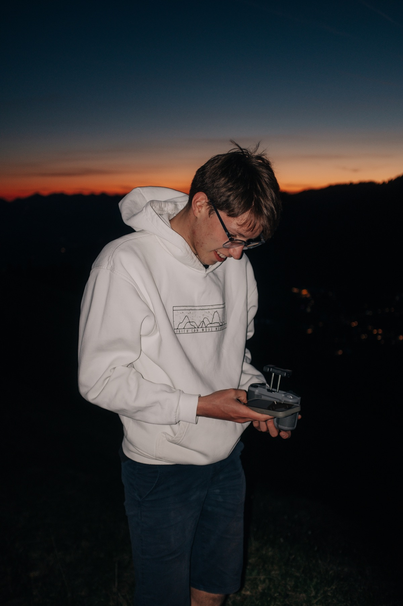
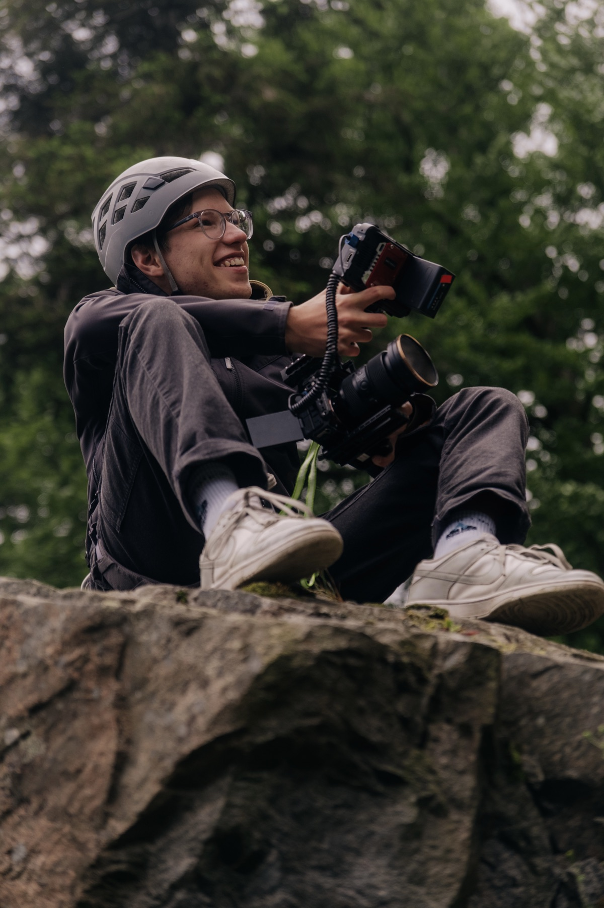
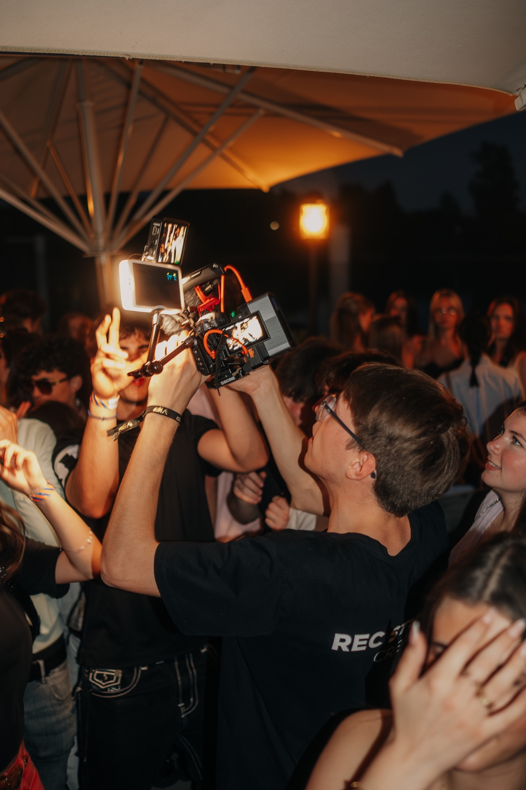

Welche Filmproduktionen bietest du an?
Ich produziere Musikvideos, Aftermovies und Social Content. Im Showreel bekommst du einen Eindruck meiner Arbeit.
VIDEO & WEBSITES
Filmproduktion.
Webdesign & Software.
Musikvideos, Aftermovies und Social Content.
Websites und individuelle Anwendungen aus Wiesbaden.



FILM · WEBSITES · SOFTWARE
Musikvideos. Aftermovies. Social Content.
Mein Showreel: ein Blick auf die Bilder und Geschichten, die ich in Bewegung bringe.
Mehr zur Filmproduktion in WiesbadenIch gestalte Websites für Unternehmen und entwickle Software für konkrete Aufgaben. Vom Firmenauftritt bis zu Anwendungen für Buchung und Verwaltung.
Ein Auftritt für lokale Unternehmen, von den Inhalten bis zur Umsetzung. Für ein Firmenprojekt habe ich mit einem technischen Partner eine neue Website entwickelt.
Ein Buchungssystem mit unterschiedlichen Rollen und einer angepassten Verwaltung. Entwickelt mit Django, PostgreSQL und Python.
Du planst einen neuen Webauftritt? Mehr zu Webdesign in Wiesbaden
Projekt anfragenFotografie für Menschen, Unternehmen und Veranstaltungen, in Wiesbaden und darüber hinaus. Mich interessieren die Momente dazwischen genauso wie das geplante Motiv.
Projekt anfragen


Du suchst gezielt einen Fotografen in Wiesbaden? Mehr zur Fotografie in Wiesbaden
Mehr Fotoarbeiten und Einblicke hinter die Kamera auf Instagram .
Das Wichtigste zu Film, Web und deiner Anfrage.
Ich produziere Musikvideos, Aftermovies und Social Content. Im Showreel bekommst du einen Eindruck meiner Arbeit.
Ich gestalte Websites für Unternehmen und entwickle individuelle Anwendungen. Eine Firmenwebsite habe ich mit einem technischen Partner umgesetzt. Ein Buchungssystem mit Rollen und Verwaltung habe ich mit Django, PostgreSQL und Python entwickelt.
Schreib kurz, was du planst und wann es losgehen soll. Das Formular bereitet eine E-Mail vor, die du selbst absendest. Du kannst mir auch direkt an jofreheil@icloud.com schreiben.
Ja. Ich fotografiere Porträts, Veranstaltungen und Motorsport in Wiesbaden und darüber hinaus.
Erzähl mir von deiner Idee.
Ein paar Sätze reichen für den Anfang.